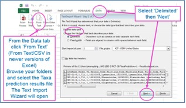
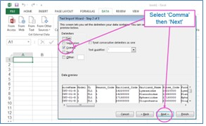
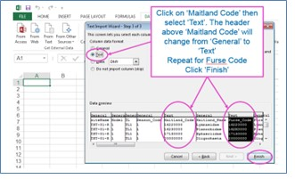

User Guide
River Invertebrate Classification Tool (RICT) Steering Group
2023-07-06 version: 3.1.5
Source:vignettes/user-guide.Rmd
user-guide.Rmd

Purpose
Welcome to the RICT user guide. Here we explain how to upload macro-invertebrate results to RICT website. We then demonstrate how to predict reference values for indices and taxa lists. Additionally, we explain how to classify status and compare results.
Quick Start
Before you start, you need river macro-invertebrate data to process. If you do not have any data prepared, example data is provided in the validation template spreadsheet. However, if you are looking to run your own results, you will need the following:
WHPT (Walley, Hawkes, Paisley and Trigg) scores based on macro-invertebrate results. To calculate WHPT index scores, you can use the WHPT spreadsheet calculator. Your scores should be based on macro-invertebrate results collected and analysed following standard techniques.
A list of predictor values based on field observations and GIS. Predictor values change depending on the geographic area and model you wish to use.
If you are unsure under what circumstances RICT should be used, read the Usage section.
Prepare Input File
Download the validation template spreadsheet, this provides a helpful template for your input file. For reference and testing, the template spreadsheet also includes example data.
Read the README instructions in the spreadsheet for guidance on completing the template.
Complete the template for the area required (GB - Great Britain. NI - Northern Ireland, IoM - Isle of Man) by adding in your WHPT results and predictor values.
Copy and paste the completed template with column names into a blank spreadsheet and save as Comma Separated File (.CSV).
NOTE - a template must contain data for only one region and model.
Predict and Classify
Open the RICT website, select the options you require.
Select ‘Browse’ button. Browse your files, upload the prepared .CSV template file.
Depending on the options you select, the following results will be displayed:
Map with named site markers
Download Outputs button
Table of validation message (or a short message if all validation pass)
Table of predictions
If Classification option selected, a table displaying Classification
If Predict Taxa Option selected, a table of predicted taxa
Example of options, map, download section of the RICT website.
If the process fails, the website displays a red error message.
See Prediction and Classification section for more info on these outputs.
Compare
Compare allows you to run a comparison between two sites or the same site on different dates.
- Prepare two .CSV input files using spreadsheet template. Use the demo up and downstream files provided as a guide or to test out.
NOTE: RICT compares the two files row to row. For instance, row 1 in the first file is compared to row 1 in the second file. Then row 2 is compared with row 2… and so on. Therefore, the two files being compared must contain the same number of rows.
Open the RICT website, navigate to the Compare tab, select the options you require, for example ‘single-year’ or ‘multi-year’.
Select ‘Browse’ button for file 1. Browse for your saved template file and upload. Repeat for file 2.
RICT will display your results. An error message will appear if all your data failed validation. See the Compare section for more information on interpreting outputs.
Example of the compare section of the RICT website.
Options
RICT options
Year Type
- Single-year - processes data for separately for each year at each site. Classifies each season and combined Spring and Autumn, where data is available.
- Multi-year - aggregated outputs across multiple years for each site. Provides Spring and Autumn combined classification only.
See Classification for more details.
Outputs
Include Classification outputs and predictions, or only display predictions.
Include All Indices
This option will display predictions for all inverts indices not just WHPT predictions. RICT can predict around 60+ indices. See All Indices for more information.
Predict Taxa Lists
Display table of prediction for taxa list(s). See taxa prediction for more information.
Background
RICT uses a model based on data collected from sampling locations with minimal environmental pressures to predict expected conditions across the river network. UK environment agencies use RICT to classify rivers for Water Framework Directive (WFD) assessment, and to enforce statutory objectives.
Key Functionality:
- Predict reference indices values.
- Predict reference taxa.
- Classify the status of observed results compared to expected reference conditions.
- Give a probability of status class.
- Compare two samples and give a likelihood of whether they are significantly different.
RICT is maintained by:
- Environment Agency (EA)
- Natural Resources Wales (NRW)
- Northern Ireland Environment Agency (NIEA)
- Scottish Environment Protection Agency (SEPA)
NOTE: The latest release of RICT replaces the version hosted on Azure ML Studio.
Usage
RICT is only suitable for freshwater (not estuarine or marine) sites on rivers or streams that are naturally permanently flowing, and flow down to the sea (not pumped).
For the official status classification, you must only classify sites that have invertebrate data from both spring and autumn of the same year. You can only perform a WFD macro-invertebrate classification using individual spring and autumn values of WHPT ASPT and WHPT NTaxa (based on abundance-related index values for all families at Taxon Level 2). The official method statement for the river invertebrate (general degradation) classification is available from WFD UKTAG.
The probabilities of class provided by RICT are only appropriate for samples analysed in the laboratory and expressed in the correct form of WHPT to which the bias values relate.
RICT classifications cannot be used for official purposes if based on single seasons, different forms of WHPT indices or samples not analysed in the laboratory.
Sampling
Collect and analyse all samples for RICT according to standard methods. These two Environment Agency documents provide a current outline of the standard approach:
LIT 11610 - Freshwater Macro-invertebrate Sampling in Rivers, 2017
LIT 11614 - Freshwater Macro-invertebrate analysis of riverine samples, 2014
More general guides are available on STAR project website:
Enter > Protocols > Macro-invertebrates: RIVPACS Macro-invertebrate Sampling Protocol (covers shallow water sampling only) and RIVPACS Sorting & Recording (by Mike Furse).
Validation
RICT automatically checks and validates the uploaded input file, displaying any failures or warnings.
See the Functional Specifications for the full list of checks, warnings and failure values.
Prediction
RICT uses environmental predictors to model expected reference conditions. Specifically, RICT uses the RIVPACS IV models (River InVertebrate Prediction and Classification System). It is based on TWINSPAN grouping.
More information about the specification of the models can be found in the Functional Specifications.
Models and Areas
There are two models available:
- Model 1 (with IoM, GB and NI variations)
- Based on a range of observed as well as physical/chemical predictors (substrate, river width, slope etc). Model 1 is the original predictive model, and this is still the definitive version, used for WFD river invertebrate status classification and objectives setting.
- Model 44 (GB only)
- Based on GIS (geology, catchment size etc) and Alkalinity predictors using a new predictive model for GB only. This is a new model for testing and evaluation only.
RICT will automatically select the model based on the input template uploaded and the area your grid references are located in.
Environmental Predictors
General guidance on available data sources and use of predictor variables is outlined in sections below. More information regarding the units and exact definition of the input predictor variables for all models can be found in the functional specification.
Model 1 Predictors
River substrate, width and depth predictors required for GB and NI variations of Model 1 must be the median long-term averages that take account of conditions throughout the whole year, including summer. Preferably they are based on annual averages collected from many years. As a minimum, these averages should be based on data collected in all three seasons (spring, summer and autumn) from at least one normal year (not a year with drought or floods).
If you are unable to get such data, do not use actual measurements of width and depth when you collected an invertebrate sample, particularly in summer, but use your estimate what you think the normal width and depth should be and allow for greater imprecision in RIVPACS predictions.
Environmental data from Environment Agency monitoring sites suitable for input into RICT are available from the Ecology & Fish Data Explorer https://environment.data.gov.uk/ecology-fish/. This includes alkalinity and discharge category.
Model 44 Predictors
Input variables for Model 44 can be download from Defra GIS website. These can be copied and pasted into the corresponding columns on the Model 44 template.
Alkalinity
Alkalinity (and its alternatives total hardness, calcium concentration or conductivity) measured in Environment Agency chemical river quality monitoring is available from Open WIMS data and http://eawaterquality.shinyapps.io/ecologicalstatsapp/.
Grid Reference
RICT uses 10-figure grid references. The 4th and 5th digits are often inaccurate unless based on GPS. Grid references are a common cause of data input errors.
The GB Ordnance Survey grid references starts with two letters. Where in as Northern Ireland, starts with one letter based on the Irish Grid Reference System) These letters represent a unique 100 km square. These are followed by eastings and northings that locate the southwest (bottom left) corner of the grid square but describe the whole grid square, something that is often forgotten. The size of the grid square is indicated by the number of digits in the easting and northing. Each successive pair of easting and northing refers to a smaller grid within the square indicated by the previous easting and northing, so the 100 m square ST3605 is roughly in the middle of the 1 km square ST30.
Default Outputs
The output from predictions always includes various ‘bookkeeping’ columns for reference:
| Column Name | Definition |
|---|---|
| SITE | Site reference number, from input file |
| LATITUDE | Location point |
| LONGITUDE | Location point |
| LOG.ALTITUDE | Logarithmic value for Altitude |
| LOG.DISTANCE.FROM.SOURCE | Logarithmic value for Distance from source |
| LOG.WIDTH | Logarithmic value for Stream Width |
| LOG.DEPTH | Logarithmic value for Stream Depth |
| MEAN.SUBSTRATUM | Calculated mean substratum |
| DISCHARGE.CATEGORY | Discharge category |
| ALKALINITY | Alkalinity |
| LOG.ALKALINITY | Logarithmic value for Alkalinity |
| LOG.SLOPE | Logarithmic value for Slope |
| MEAN.AIR.TEMP (GB only) | Calculated Mean Air Temperature |
| AIR.TEMP.RANGE (GB only) | Calculated Air Temperature Range |
| p1 … p43 (GB) or p1 … p11 (NI) | Probability of test site belonging to each RIVPACS IV end-group |
| SuitCode | Calculated Suitability code for test site |
| SuitText | Text definition of suitability code for the test site |
| BelongsTo_endGrp | Most probable RIVPACS IV end-group the test site belongs to |
| Season | Season to which prediction relates |
Indices
RICT provides predicted indices outputs for a range of purposes. Primarily, ‘WHPT NTAXA Abund’ and ‘WHPT ASPT Abund’ reference condition values are predicted and compared against observed values in the Classification process. However, selecting the ‘All indices’ option will predict indices for a range of other possible ecological insights.
Indices Usage
Indices simplify complex biological results to help ecologists explain them to managers. Although their format is intentionally very simple (usually a single number or letter), they are actually very complex, and most do not behave as parameters on a continuous scale. Do not use indices as a basis for statistical analysis.
Users should be wary of using indices, particularly without understanding the extent of the data from which they were derived (comprehensiveness, reliability, geographical and stream type coverage), the statistical properties of their format (average, score, percentage), the impact of sampling and analytical error on the index and the magnitude of that error, the way in which the environmental pressure that the index is designed to respond affects invertebrates, other environmental pressures that have the same effect, cause the same environmental pressures or interact with each other (for example, reducing the availability of oxygen, increasing siltation, altering the availability of metal ions or nutrients), and other environmental pressures that co-occur at sites where the pressure of interest occurs.
The fact that an index sensitive to a particular pressure indicates an impact does not necessarily mean that pressure is present at a site.
Invertebrates respond to the integrated effect of all environmental pressures (both natural and anthropogenic), and it is impossible to apportion impact to individual pressures unless an environmental pressure is so severe that it is overwhelming. This will increasingly be the case as gross pressures are eliminated by environmental regulation.
Included Indices
You should not regard the inclusion of an index in the RICT ‘all indices’ output as an endorsement of that index. Some indices have been included to allow them to be evaluated or compared to other indices. Similarly, the exclusion of an index does not imply that it is not useful.
| Indices Column Name | Description |
|---|---|
| TL1_BMWP | Taxon Level 1 Biological Monitoring Working Party score |
| TL1_NTAXA | Taxon Level 1 Number of BMWP-scoring taxa |
| TL1_ASPT | Taxon Level 1 Average (BMWP) score per taxon |
| TL2_WHPT_Score_nonAb_DistFam | Taxon Level 2 Walley Hawkes Paisley Trigg score based on presence only (not abundance-related) index values for distinct families |
| TL2_WHPT_NTAXA_nonAb_DistFam | Taxon Level 2 Number of Walley Hawkes Paisley Trigg scoring taxa based on distinct families |
| TL2_WHPT_ASPT_nonAb_DistFam | Taxon Level 2 Average Walley Hawkes Paisley Trigg score per taxon based on presence only (not abundance-related) index values for distinct families |
| TL2_WHPT_Score_nonAb_CompFam | Taxon Level 2 Walley Hawkes Paisley Trigg score based on presence only (not abundance-related) index values and BMWP composite families |
| TL2_WHPT_NTAXA_nonAb_CompFam | Taxon Level 2 Number of Walley Hawkes Paisley Trigg scoring taxa based and BMWP composite families |
| TL2_WHPT_ASPT_nonAb_CompFam | Taxon Level 2 Average Walley Hawkes Paisley Trigg score per taxon based on presence only (not abundance-related) index values and BMWP composite families |
| TL2_WHPT_Score_AbW_DistFam | Taxon Level 2 Walley Hawkes Paisley Trigg score based on abundance-related index values for distinct families |
| TL2_WHPT_NTAXA_AbW_DistFam | Taxon Level 2 Number of Walley Hawkes Paisley Trigg scoring taxa based distinct families (this is the form of WHPT NTaxa used for status classification) |
| TL2_WHPT_ASPT_AbW_DistFam | Taxon Level 2 Average Walley Hawkes Paisley Trigg score per taxon based on abundance-related index values for distinct families (this is the form of WHPT NTaxa used for status classification) |
| TL2_WHPT_Score_AbW_CompFam | Taxon Level 2 Walley Hawkes Paisley Trigg score based on abundance-related index values and BMWP composite families |
| TL2_WHPT_NTAXA_AbW_CompFam | Taxon Level 2 Number of Walley Hawkes Paisley Trigg scoring taxa based on BMWP composite families |
| TL2_WHPT_ASPT_AbW_CompFam | Taxon Level 2 Average Walley Hawkes Paisley Trigg score per taxon based on abundance-related index values and BMWP composite families |
| TL1_AWIC_Fam | Taxon Level 1 Acid Water Indicator Community (family level), Davy-Bowker et al. (2005) The development and testing of a macroinvertebrate biotic index for detecting the impact of acidity on streams. Archiv für Hydrobiologie 163: 383-403 |
| TL4_AWIC_Sp_Murphy | Taxon Level 4 Acid Water Indicator Community (species level). Murphy, et al. (2013) A diagnostic biotic index for assessing acidity in sensitive streams in Britain. Ecological Indicators 24: 562–572. |
| TL5_AWIC_Sp_Murphy | Taxon Level 5 Acid Water Indicator Community (species level). Murphy, et al. (2013) A diagnostic biotic index for assessing acidity in sensitive streams in Britain. Ecological Indicators 24: 562–572. |
| TL4_WFD_AWIC_Sp_McFarland | Taxon Level 4 Acid Water Indicator Community (species level). McFarland, B (2010) Developing typology and class boundaries for WFD-AWICsp to assess acidification in UK rivers using macroinvertebrates. WFD UK Technical Advisory Group |
| TL5_WFD_AWIC_Sp_McFarland | Taxon Level 5 Acid Water Indicator Community (species level). McFarland, B (2010) Developing typology and class boundaries for WFD-AWICsp to assess acidification in UK rivers using macroinvertebrates. WFD UK Technical Advisory Group |
| TL4_Raddum | Taxon Level 4 Raddum index. Fjellheim A. & Raddum G.G. (1990) Acid precipitation: Biological monitoring of streams and lakes. Science of the Total Environment 96: 57-66 |
| TL5_Raddum | Taxon Level 4 Raddum index. Fjellheim A. & Raddum G.G. (1990) Acid precipitation: Biological monitoring of streams and lakes. Science of the Total Environment 96: 57-66 |
| TL4_SEPA_per_Acid_Sensitive_Taxa | Taxon Level 4 Scottish Environment Protection Agency percentage Acid Sensitive Taxa. David Rendall, Scottish Environment Protection Agency, 20th January 2010 |
| TL5_SEPA_perc_Acid_Sensitive_Taxa | Taxon Level 5 Scottish Environment Protection Agency percentage Acid Sensitive Taxa. David Rendall, Scottish Environment Protection Agency, 20th January 2010 |
| TL4_MetTol | Taxon Level 4 Metal Tolerance index. Jones, IJ, et al. (2019) The Ecological Impacts of Contaminated Sediment from Abandoned Metal Mines. Final report of WT0970 Characterisation and targeting of measures for (non-coal) polluted mine waters – Impacts of contaminated sediment on ecological recovery September 2016. London, Defra. |
| TL5_MetTol | Taxon Level 5 Metal Tolerance index. Jones, IJ, et al. (2019) The Ecological Impacts of Contaminated Sediment from Abandoned Metal Mines. Final report of WT0970 Characterisation and targeting of measures for (non-coal) polluted mine waters – Impacts of contaminated sediment on ecological recovery September 2016. London, Defra. |
| TL1_2_LIFE_Fam_CompFam | Taxon Level 1, supplemented by Taxon Level 2 families, Lotic-invertebrate Index for Flow Evaluation (family level) but with BMWP composite taxa as composites. Extence et al., (1999). River flow indexing using British benthic macroinvertebrates: a framework for setting hydroecological objectives. Regulated Rivers: Research & Management 15: 543-574. |
| TL2_LIFE_Fam_DistFam | Taxon Level 2, Lotic-invertebrate Index for Flow Evaluation (family level) Distinct Families Extence et al., (1999). River flow indexing using British benthic macroinvertebrates: a framework for setting hydroecological objectives. Regulated Rivers: Research & Management 15: 543-574. |
| TL3_LIFE_Fam_DistFam | Taxon Level 3, Lotic-invertebrate Index for Flow Evaluation (family level) Distinct Families Extence et al., (1999). River flow indexing using British benthic macroinvertebrates: a framework for setting hydroecological objectives. Regulated Rivers: Research & Management 15: 543-574. |
| TL4_LIFE_Sp | Taxon Level 4, Lotic-invertebrate Index for Flow Evaluation (species level) Extence et al., (1999). River flow indexing using British benthic macroinvertebrates: a framework for setting hydroecological objectives. Regulated Rivers: Research & Management 15: 543-574. |
| TL5_LIFE_Sp | Taxon Level 5, Lotic-invertebrate Index for Flow Evaluation (species level) Extence et al., (1999). River flow indexing using British benthic macroinvertebrates: a framework for setting hydroecological objectives. Regulated Rivers: Research & Management 15: 543-574. |
| TL3_PSI_Fam | Taxon Level 3, Proportion of Sediment-sensitive Invertebrates (family level) Extence et al., (2011) The Assessment of Fine Sediment Accumulation in Rivers Using Macro-Invertebrate Community Response. River Research and Applications, 29: 17–55 |
| TL4_PSI_Sp | Taxon Level 4, Proportion of Sediment-sensitive Invertebrates (species level) Extence et al., (2011) The Assessment of Fine Sediment Accumulation in Rivers Using Macro-Invertebrate Community Response. River Research and Applications, 29: 17–55 |
| TL5_PSI_Sp | Taxon Level 5, Proportion of Sediment-sensitive Invertebrates (species level) Extence et al., (2011) The Assessment of Fine Sediment Accumulation in Rivers Using Macro-Invertebrate Community Response. River Research and Applications, 29: 17–55 |
| TL3_E_PSI_fam69 | Taxon Level 3, Empirically-weighted Proportion of Sediment-sensitive Invertebrates (family level) Turley et al., (2016). A sediment-specific family-level biomonitoring tool to identify the impacts of fine sediment in temperate rivers and streams. Ecological Indicators 70: 151–165 |
| TL4_E_PSI_mixed_level | Taxon Level 4, Empirically-weighted Proportion of Sediment-sensitive Invertebrates (mixed taxon level) |
| TL5_E_PSI_mixed_level | Taxon Level 5, Empirically-weighted Proportion of Sediment-sensitive Invertebrates (mixed taxon level) |
| TL4_oFSIsp | Taxon Level 4, organic Fine Sediment Index (species) Murphy et al., (2015) Development of a biotic index using stream macroinvertebrates to assess stress from deposited fine sediment. Freshwater Biology 60: 2019-2036 |
| TL5_oFSIsp | Taxon Level 5, organic Fine Sediment Index (species) Murphy et al., (2015) Development of a biotic index using stream macroinvertebrates to assess stress from deposited fine sediment. Freshwater Biology 60: 2019-2036 |
| TL4_ToFSIsp | Taxon Level 4, Total Fine Sediment Index (species) Murphy et al., (2015) Development of a biotic index using stream macroinvertebrates to assess stress from deposited fine sediment. Freshwater Biology 60: 2019-2036 |
| TL5_ToFSIsp | Taxon Level 5, Total Fine Sediment Index (species) Murphy et al., (2015) Development of a biotic index using stream macroinvertebrates to assess stress from deposited fine sediment. Freshwater Biology 60: 2019-2036 |
| TL4_CoFSIsp | Taxon Level 4, Combined Fine Sediment Index (species) Murphy et al., (2015) Development of a biotic index using stream macroinvertebrates to assess stress from deposited fine sediment. Freshwater Biology 60: 2019-2036 |
| TL5_CoFSIsp | Taxon Level 5, Combined Fine Sediment Index (species) Murphy et al., (2015) Development of a biotic index using stream macroinvertebrates to assess stress from deposited fine sediment. Freshwater Biology 60: 2019-2036 |
| TL4_GSFI_FI05 | Taxon Level 4, German Stream Fauna Index (Deutscher Fauna-Index) Stream Type 05 (Siliceous mountain streams rich in coarse material) |
| TL5_GSFI_FI05 | Taxon Level 5, German Stream Fauna Index (Deutscher Fauna-Index) Stream Type 05 (Siliceous mountain streams rich in coarse material) |
| TL4_GSFI_FI09 | Taxon Level 4, German Stream Fauna Index (Deutscher Fauna-Index) Stream Type 09 (Silicate low mountain rivers, rich in fine to coarse material) |
| TL5_GSFI_FI09 | Taxon Level 5, German Stream Fauna Index (Deutscher Fauna-Index) Stream Type 09 (Silicate low mountain rivers, rich in fine to coarse material) |
| TL4_GSFI_FI091 | Taxon Level 4, German Stream Fauna Index (Deutscher Fauna-Index) Stream Type 09.1 (Carbonatic low mountain rivers, rich in fine to coarse material) |
| TL5_GSFI_FI091 | Taxon Level 5, German Stream Fauna Index (Deutscher Fauna-Index) Stream Type 09.1 (Carbonatic low mountain rivers, rich in fine to coarse material) |
| TL4_GSFI_FI091_K | Taxon Level 4, German Stream Fauna Index (Deutscher Fauna-Index) Stream Type 09.1_K (Carbonatic low mountain rivers, rich in fine to coarse material (Keuper)) |
| TL5_GSFI_FI091_K | Taxon Level 5, German Stream Fauna Index (Deutscher Fauna-Index) Stream Type 09.1_K (Carbonatic low mountain rivers, rich in fine to coarse material (Keuper)) |
| TL4_GSFI_FI092 | Taxon Level 4, German Stream Fauna Index (Deutscher Fauna-Index) Stream Type 09.2 (Large rivers of the low mountain range) |
| TL5_GSFI_FI092 | Taxon Level 5, German Stream Fauna Index (Deutscher Fauna-Index) Stream Type 09.2 (Large rivers of the low mountain range) |
| TL4_GSFI_FI11_12 | Taxon Level 4, German Stream Fauna Index (Deutscher Fauna-Index) Stream Types 11 (Organically characterised streams) and Type 12 (Organically characterised rivers) |
| TL5_GSFI_FI11_12 | Taxon Level 5, German Stream Fauna Index (Deutscher Fauna-Index) Stream Types 11 (Organic streams) and Type 12 (Organic rivers) |
| TL4_GSFI_FI14_16 | Taxon Level 4, German Stream Fauna Index (Deutscher Fauna-Index) Stream Types 14 (Sandy lowland streams) + Stream Type 16 (Gravelly lowland streams) + Stream Type 18 (Loose loamy lowland streams) |
| TL5_GSFI_FI14_16 | Taxon Level 5, German Stream Fauna Index (Deutscher Fauna-Index) Stream Types 14 (Sandy lowland streams) + Stream Type 16 (Gravelly lowland streams) + Stream Type 18 (Loose loamy lowland streams) |
| TL4_GSFI_FI15_17 | Taxon Level 4, German Stream Fauna Index (Deutscher Fauna-Index) Stream Types 15 (Sand and clay lowland rivers) + Type 17 (Gravelly lowland rivers) |
| TL5_GSFI_FI15_17 | Taxon Level 5, German Stream Fauna Index (Deutscher Fauna-Index) Stream Types 15 (Sand and clay lowland rivers) + Type 17 (Gravelly lowland rivers) |
| TL4_GSFI_FI152 | Taxon Level 4, German Stream Fauna Index (Deutscher Fauna-Index) Stream Types 15.2_Große (Large lowland rivers of sand and clay) |
| TL5_GSFI_FI152 | Taxon Level 5, German Stream Fauna Index (Deutscher Fauna-Index) Stream Types 15.2_Große (Large lowland rivers of sand and clay) |
| TL2_SPEAR_Fam_perc | Taxon Level 2, Species at Risk from pesticides (family level) as a percentage, Beketov et al., (2008) Freshwater biological indicators of pesticide contamination – an adaptation of the SPEAR approach for the UK. Science Report – SC030189/SR4. Bristol, Environment Agency. |
| TL4_SPEAR_Sp_perc | Taxon Level 4, Species at Risk from pesticides (species level) as a percentage, Beketov et al., (2008) Freshwater biological indicators of pesticide contamination – an adaptation of the SPEAR approach for the UK. Science Report – SC030189/SR4. Bristol, Environment Agency. |
| TL5_SPEAR_Sp_perc | Taxon Level 5, Species at Risk from pesticides (species level) as a percentage, Beketov et al., (2008) Freshwater biological indicators of pesticide contamination – an adaptation of the SPEAR approach for the UK. Science Report – SC030189/SR4. Bristol, Environment Agency. |
| SPEAR_pesticides_TL2_fam_Knillmann_2018 | Taxon Level 2, Species at Risk from pesticides (family level), Knillmann et al., (2018) Indication of pesticide effects and recolonization in streams. Science of the Total Environment 630: 1619-1627 |
| SPEAR_refuge_TL2_fam_Knillmann_2018 | Taxon Level 2, Species at Risk refuge areas (family level), Knillmann et al., (2018) Indication of pesticide effects and recolonization in streams. Science of the Total Environment 630: 1619-1627 |
| SPEAR_pesticides_TL4_sp_Knillmann_2018 | Taxon Level 4, Species at Risk from pesticides (family level), Knillmann et al., (2018) Indication of pesticide effects and recolonization in streams. Science of the Total Environment 630: 1619-1627 |
| SPEAR_refuge_TL4_sp_Knillmann_2018 | Taxon Level 4, Species at Risk refuge areas (species level), Knillmann et al., (2018) Indication of pesticide effects and recolonization in streams. Science of the Total Environment 630: 1619-1627 |
| SPEAR_pesticides_TL5_sp_Knillmann_2018 | Taxon Level 5, Species at Risk from pesticides (species level), Knillmann et al., (2018) Indication of pesticide effects and recolonization in streams. Science of the Total Environment 630: 1619-1627 |
| SPEAR_refuge_TL5_sp_Knillmann_2018 | Taxon Level 5, Species at Risk refuge areas (species level), Knillmann et al., (2018) Indication of pesticide effects and recolonization in streams. Science of the Total Environment 630: 1619-1627 |
| TL4_CCI | Taxon Level 4, Community Conservation Index, Chadd & Extence (2004). The conservation of freshwater macroinvertebrate populations: a community-based classification scheme. Aquat. Conserv. Mar. Freshwater Ecosyst. 14: 597–624 |
| TL5_CCI | Taxon Level 5, Community Conservation Index, Chadd & Extence (2004). The conservation of freshwater macroinvertebrate populations: a community-based classification scheme. Aquat. Conserv. Mar. Freshwater Ecosyst. 14: 597–624 |
| TL2_08_Group_ARMI_NTaxa | Taxon Level 2, Number of taxa belonging to the Anglers’ Riverfly Monitoring Initiative Index, Brooks et al., (2019) Anglers’ Riverfly Monitoring Initiative (ARMI): a UK-wide citizen science project for water quality assessment. Freshwater Science 38 (2): 270-280 |
| TL2_08_Group_ARMI_Score | Taxon Level 2, Anglers’ Riverfly Monitoring Initiative Index score, Brooks et al., (2019) Anglers’ Riverfly Monitoring Initiative (ARMI): a UK-wide citizen science project for water quality assessment. Freshwater Science 38 (2): 270-280 |
| TL2_33_Group_ARMI_NTaxa | Taxon Level 2, Number of taxa belonging to the Extended Anglers’ Riverfly Monitoring Initiative Index |
| TL2_33_Group_ARMI_Score | Taxon Level 2, Extended Anglers’ Riverfly Monitoring Initiative Index score |
| TL2_33_Group_Flow_Silt_NTaxa | Taxon Level 2, Number of taxa belonging to the Extended Anglers’ Riverfly Monitoring Initiative Silt Index |
| TL2_33_Group_Flow_Silt_Score | Taxon Level 2, Extended Anglers’ Riverfly Monitoring Initiative Silt Index score |
| TL2_14_Group_Urban_NTaxa | Taxon Level 2, Number of taxa belonging to the Urban Riverfly index |
| TL2_14_Group_Urban_Score | Taxon Level 2, Urban Riverfly index score |
Taxa
Predict the families and species expected at a site and their abundances. This powerful feature of the RIVPACS model enables the prediction of a wide range of outputs, helping with investigations and furthering our ecological understanding.
Predict five taxa lists (TL) at various levels of taxonomic resolution:
- TL1 - Super-Family
- TL2 - Super and Family level (used for routine WFD classification)
- TL3 - Family
- TL4 - Mainly species level
- TL5 - Family / Species level
Find more information about the taxa lists and their taxonomies in WFD100 report.
The website restricts the number of sites to no more than 24 sites due to the large amount of processing and output generated for each site. Taxa prediction may take several minutes to run depending on the number of sites and taxa lists required.
If you select ‘Prediction Only’ then classification is not run, therefore you do not need to include biological data in the input file.
Taxon Prediction Output
The results from the taxon taxa predictions include Maitland and Furse taxonomic codes, some of which have leading zeroes. It you open the CSV output file with Excel in the normal way, you will lose these leading zeroes because Excel will assume that they are numbers. To preserve the leading zeroes when you open the results in Excel, you will need to open a blank Excel worksheet and import the results as text.

In the output, each row includes prediction results for one taxon. For each site, expect about 3500 rows of data if predicting all taxa lists. The first block of rows will be for the first site selected and below it the results for the second site. For each site, rows are ordered by taxonomic level, then by season code, and then by Maitland code, so you should re-order the data if you only want data for a particular season but want that for all taxonomic levels.
Each row includes the following columns:
- siteName - provided in the input file.
- Model - 1 for RIVPACS IV Model 1 GB, 2 RIVPACS IV Model 1 NI.
- TL - Taxonomic level. The five levels (TL1 – TL5) are:
- TL1 = taxa recognised by BMWP indices
- TL2 = taxa recognised by WHPT indices
- TL3 = all families included in RIVPACS
- TL4 = all species included in RIVPACS species
- TL5 = mixed taxon level (a practical, mainly species level of analysis but with less easily recognised species identified to higher taxonomic levels)
Season_Code Code specifying season; 1 = spring; 2 = summer; 3 = autumn.
Maitland_Code - a code identifying the invertebrate. Maitland codes are hierarchical. The first two digits indicates class, the next two family, the next two genus and the final two species. Codes with a letter are artificial combinations of taxa.
Maitland_Name - name of the taxon represented by the Maitland code.
Furse_Code - Updated Maitland code, revised by Mike Furse, 2 January 2007, useful for organising results into taxonomic order.
Furse_Name - name of taxon represented by Furse code.
NBN_Code - National Biodiversity Network code, compiled 2007
NBN_Name - name of taxon represented by NBN code.
Average_Numerical_Abundance - predicted numerical abundance based on average of 10,000 simulations
Average_Log10_Abundance - predicted log10 abundance category, based on the average of 10.000 simulations
Prob_Occurrence - predicted probability of the taxon being present
Prob_Log1 = probability of the taxon being present in log10 abundance category 1 (numerical abundance 1-9)
Prob_Log2 - probability of the taxon being present in log10 abundance category 2 (numerical abundance 10-99)
Prob_Log3 - probability of the taxon being present in log10 abundance category 3 (numerical abundance 100-999)
Prob_Log4 - probability of the taxon being present in log10 abundance category 4 (numerical abundance 1000-9999)
Prob_Log5 - probability of the taxon being present in log10 abundance category 5 (numerical abundance 10000+)
Further information about the taxonomic framework and the taxon prediction output is given in Davy-Bowker, J, R. Clarke, T. Corbin, H. Vincent, J. Pretty, A. Hawczak, J. Blackburn, J. Murphy & I. Jones (2008) River Invertebrate Classification Tool. Final Report. SNIFFER Project WFD72c. Edinburgh, SNIFFER
Classification
The most important columns from the Classification output are:
Class – the WFD status.
Probability of class – certainty of classification, taking account of uncertainty caused by sampling and other errors.
ProbH, ProbG, ProbM, ProbP, ProbB – indicates other likely classes and whether your site is at the upper, mid or lower end of the class.
EQR – Ecological Quality Ratio; The value of a biotic index expressed as a proportion of its reference value. The reference value is what is expected at minimally disturbed, near natural environmental quality.
A comparison of the EQRs for different indices and seasons can help you to identify the environmental cause of poor quality.
Single Year
This option undertakes status classifications for spring and autumn for a single year. There is no difference in classification results if you run one years’ spring and summer data using the single year or the multi-year option. However, there is a slight difference in the headers in the output file.
Single-year option also calculates single season classifications. Single season classification are intended only for investigative work. They are unsuitable for setting environmental quality objectives or testing compliance against them.
If you do not enter results for a season(s), RICT will leave the outputs for any missing season(s) empty.
Single-Year Outputs
| 1 | |
|---|---|
| SITE | MYR-GB-01-R |
| YEAR | 2016 |
| WATERBODY | Waterbody name |
| H_NTAXA_spr | 90.59 |
| G_NTAXA_spr | 8.82 |
| M_NTAXA_spr | 0.59 |
| P_NTAXA_spr | 0 |
| B_NTAXA_spr | 0 |
| mostProb_NTAXA_spr | H |
| NTAXA_eqr_av_spr | 0.939394 |
| H_NTAXA_aut | 99.24 |
| G_NTAXA_aut | 0.76 |
| M_NTAXA_aut | 0 |
| P_NTAXA_aut | 0 |
| B_NTAXA_aut | 0 |
| mostProb_NTAXA_aut | H |
| NTAXA_eqr_av_aut | 1.0622 |
| H_NTAXA_spr_aut | 96.9 |
| G_NTAXA_spr_aut | 3.02 |
| M_NTAXA_spr_aut | 0.08 |
| P_NTAXA_spr_aut | 0 |
| B_NTAXA_spr_aut | 0 |
| mostProb_NTAXA_spr_aut | H |
| NTAXA_aver_spr_aut | 1.000797 |
| H_ASPT_spr | 41.97 |
| G_ASPT_spr | 52.45 |
| M_ASPT_spr | 5.52 |
| P_ASPT_spr | 0.06 |
| B_ASPT_spr | 0 |
| mostProb_ASPT_spr | G |
| ASPT_eqr_av_spr | 0.9560925 |
| H_ASPT_aut | 62.36 |
| G_ASPT_aut | 35.26 |
| M_ASPT_aut | 2.38 |
| P_ASPT_aut | 0 |
| B_ASPT_aut | 0 |
| mostProb_ASPT_aut | H |
| ASPT_eqr_av_aut | 0.9854987 |
| H_ASPT_spr_aut | 52.14 |
| G_ASPT_spr_aut | 44.12 |
| M_ASPT_spr_aut | 3.73 |
| P_ASPT_spr_aut | 0.01 |
| B_ASPT_spr_aut | 0 |
| mostProb_ASPT_spr_aut | H |
| ASPT_aver_spr_aut | 0.9707956 |
| mintawhpt_spr_H | 41.97 |
| mintawhpt_spr_G | 52.4 |
| mintawhpt_spr_M | 5.57 |
| mintawhpt_spr_P | 0.06 |
| mintawhpt_spr_B | 0 |
| mintawhpt_spr_mostProb | G |
| mintawhpt_aut_H | 62.36 |
| mintawhpt_aut_G | 35.26 |
| mintawhpt_aut_M | 2.38 |
| mintawhpt_aut_P | 0 |
| mintawhpt_aut_B | 0 |
| mintawhpt_aut_mostProb | H |
| mintawhpt_spr_aut_H | 52.14 |
| mintawhpt_spr_aut_G | 44.12 |
| mintawhpt_spr_aut_M | 3.73 |
| mintawhpt_spr_aut_P | 0.01 |
| mintawhpt_spr_aut_B | 0 |
| mintawhpt_spr_aut_mostProb_MINTA_ | H |
| eqr_av_sum_aspt | 1.04265 |
| H_ASPT_sum | 88.57 |
| G_ASPT_sum | 11.05 |
| M_ASPT_sum | 0.38 |
| P_ASPT_sum | 0 |
| B_ASPT_sum | 0 |
| mostProb_ASPT_sum | H |
| NTAXA_eqr_av_sum | 1.137333 |
| H_NTAXA_sum | 99.89 |
| G_NTAXA_sum | 0.11 |
| M_NTAXA_sum | 0 |
| P_NTAXA_sum | 0 |
| B_NTAXA_sum | 0 |
| mostProb_NTAXA_sum | H |
| mintawhpt_sum_H | 88.57 |
| mintawhpt_sum_G | 11.05 |
| mintawhpt_sum_M | 0.38 |
| mintawhpt_sum_P | 0 |
| mintawhpt_sum_B | 0 |
| mintawhpt_sum_mostProb | H |
Multi-year
The multi-year option combines data from spring and autumn from one or more years into a single classification for the site. There is no limit to the number of years’ data that can be combined. Therefore, the multi-year option only gives output for the combined years, not for each individual year.
There is a slight difference in the headers in the multi-year classification output file compared to single year, as shown in the Section Description of RICT classification output. There is no difference in classification results if you run one years’ spring and summer data using the single year or the multi-year experiment.
There are slight differences in the way that RICT estimates the probabilities of class for multi-year classifications compared to previous versions of RICT.
The current RICT bases this on the proportion of all simulated multi-year average EQR values falling in each status class, whereas RICT 1.0 used an estimate of the “typical” (i.e., average) between-year variance within a 3-year period for the observed values of a WHPT index to allow for 1 or 2 years missing data. Neither is philosophically correct, as explained Development History section.
Multi-Year Outputs
| 1 | |
|---|---|
| SITE | MYR-GB-01-R |
| YEAR | 2016 |
| WATERBODY | Waterbody name |
| H_NTAXA_spr_aut | 96.9 |
| G_NTAXA_spr_aut | 3.02 |
| M_NTAXA_spr_aut | 0.08 |
| P_NTAXA_spr_aut | 0 |
| B_NTAXA_spr_aut | 0 |
| mostProb_NTAXA_spr_aut | H |
| NTAXA_aver_spr_aut | 1.000797 |
| H_ASPT_spr_aut | 52.14 |
| G_ASPT_spr_aut | 44.12 |
| M_ASPT_spr_aut | 3.73 |
| P_ASPT_spr_aut | 0.01 |
| B_ASPT_spr_aut | 0 |
| mostProb_ASPT_spr_aut | H |
| ASPT_aver_spr_aut | 0.9707956 |
| mintawhpt_spr_aut_H_MINTA_ | 52.14 |
| mintawhpt_spr_aut_G_MINTA_ | 44.12 |
| mintawhpt_spr_aut_M_MINTA_ | 3.73 |
| mintawhpt_spr_aut_P_MINTA_ | 0.01 |
| mintawhpt_spr_aut_B_MINTA_ | 0 |
| mintawhpt_spr_aut_mostProb_MINTA_ | H |
Probabilities of class
Probabilities of class indicate the likelihood of your site belonging to each of the WFD status classes. Every site must belong to one of the 5-classes, so for any combination of index and season(s), the probabilities always add-up to 100%. These estimates take account of two types of classification error:
The fact that when the EQR is at exactly the class boundary, the maximum likelihood of being in either of the classes immediately above or below that boundary is only 50%.
Uncertainty caused by sampling error (measured in a number of studies in which the same site was sampled by different people at the same time) and laboratory error (from the bias value that you enter with your biological data).
The probabilities are based on the frequency if each class being indicated by the 10,000 Monte Carlo simulations. Each simulation includes a random component with the same distribution as the known bias and sampling error. Remember that other sources of error mentioned in this section, which cannot be qualified, will also contribute to the imprecision of the classification.
MINTA (Minimum of NTaxa and ASPT)
The official Water Framework Directive (WFD) status classification is based on data (Environmental Quality Ratios) for both WHPT ASPT and WHPT NTaxa from both spring and autumn. Data from both seasons is combined by taking an average of the EQRs before determining the status classification. The status classification from both indices is combined by taking the worst class indicated by the two indices. MINTA is not determined from the most probable classes for each index, but by the combination of the probabilities of class for each index.
Understanding how the probabilities of class are determined for MINTA is often misunderstood, particularly as the outcome is sometimes counter-intuitive and has caused users, including the author, to assume that there has been a mistake. MINTA probabilities of class are not calculated from the distribution of probabilities of the individual indices.
They are calculated separately, in exactly the same way as the probabilities of class for the individual indices, by going back to the results of each of the 10,000 Monte Carlo simulations. The MINTA probabilities are based on the worst class indicated by either ASPT or NTaxa in each of the 10,000 Monte Carlo simulations.
The number of simulations in which the worst of these classes was High, Good, Moderate, Poor or Bad are summed and expressed as percentages of the 10,000 simulations. This is the same process used to determine the probabilities of class for the individual indices, but this time, for each simulation RICT only considers the class indicated by the index that indicated the worst class.
Interpreting Classification Output
Classification is based on both your observed data and RIVPACS prediction, so you must consider imprecision in both of these when interpreting classification results. You must take account of the reliability of the predictions, see Section Interpreting RICT2 prediction output.
Always check the suitability code from the prediction results, which is based on the combination of environmental input variables and how closely they match any of the RIVPACS end groups. Suitability is quite different to the probability of class, which does not take suitability into account.
You should also consider any environmental parameters that exceed warning limit values when judging the reliability of the predictions and therefore of the classification. Another factor is the quality of the input data: whether the environmental data is based on true long-term averages or an estimate base on biologist’s expert opinion.
For classification, the quality of the observed biological data is also important. This is partly reflected in the bias value, which represents a component of sorting and data handling error. You should also consider whether the biologist collecting the samples collected them correctly, or experienced anything that made sampling difficult, such as high or low flow, poor access to the site, damaged nets, declining light or turbid water, which should be recorded with the sample data. Always consider the probabilities of class and do not base management decisions solely on the face value or most probable class.
A site with an objective quality of Good that is classed as Moderate is less likely to have failed that standard if it also has a reasonably high probability of being good or better, and may not have actually failed the standard, whereas a site classed as Moderate but with high probabilities of being Poor or Bad is more likely to have failed the standard and the need for management action is much more certain. Remember that probabilities do not always behave intuitively, as shown in the explanation of MINTA in the preceding Section.
Two examples below illustrate how the result can be counter-intuitive:
Site A The most probable class of both ASPT and NTaxa are the same, Good, but MINTA indicated Moderate. Many of the simulations in which the worst class was indicated as Moderate by ASPT were different to the simulations where this was the worst class indicated as Moderate by NTaxa. As a result, when the number of simulations in which Moderate was indicated by ASPT and by NTaxa were added together, it came to a greater number than for each individual index, hence Moderate was the most probable MINTA class even though the most probable class for both indices individually was Good. It’s not uncommon for the MINTA most probable class to be worse that the most probable classes indicated by either ASPT or NTaxa separately.
Site B The most probable class indicated by ASPT and NTaxa were different, but MINTA indicated an even worse class. A similar thing happened here as at Site A, but more extreme. Some of the simulations in which Bad was indicated by ASPT were different to the simulations in which Bad was indicated by NTaxa, so when combined, more simulations were Bad according to MINTA than any other class. At Site A, the probability of the MINTA class being Good and Moderate are similar, and at Site B there is little difference in the probabilities of the MINTA class being poor or bad. This indicates the importance of using the probabilities of class to make decisions rather than simply the face value class or even the most probable class.
Compare Results
Compare allows you to run a comparison between two sites or the same site on different dates. The outputs consist of ASPT & NTAXA EQRs and their difference statistics. Probabilities of sites being different, and probabilities of each site class combination are also given.
Development History
Before RICT
Before RICT was available, RIVPACS III+, a FORTRAN programme, was ran locally, implemented the RIVPACS III predictive models.
Rewrite in R
The first version of RICT was a web application hosted by SEPA. This version was written in Oracle Express. RICT version 2 (RICT2) was re-written in R and hosted on Azure ML Studio. Re-writing in R made it more accessible to researchers and other ecologists to modify and customise. This also makes the software easier and cheaper to maintain. RICT version 3 hosted the R code in Github and provide a single web app replacing what was available on Azure ML Studio .
Changes Made
RICT2 corrected several errors in the original RICT, particularly the prediction and classification programmes. Because of this, results from RICT2 differ from those produced by RICT. The following errors were discovered in RICT and corrected in RICT2:
• RICT inadvertently used the ‘composite families’ version of WHPT ASPT (i.e. TL2 WHPT Score AbW, CompFam) rather than the ‘distinct families’ version (TL2 WHPT Score AbW, DistFam), although it did take account of the additional families included in WHPT. The composite families are those that were grouped together in the BMWP-score in compliance with the current taxonomy of the time, outlined in Maitland (1977), see Appendix A
• RICT did not adjust for sample bias correctly in the calculation of simulated EQI/EQR values for WHPT ASPT
• RICT suffered from other errors that caused estimates of probability of class based on WHPT ASPT adjusted for sample bias to differ from independent estimates even when the error in sample bias correction was taken into account.
The errors above were reported in Clarke, R.T. & J. Davy-Bowker (2018) Testing old (2008-18) RICT predictions and classification uncertainty using independent RIVPACS code and new RIVPACS test data: Components 1-3. A Report to the Environment Agency. Wareham, Freshwater Biological Association: pp 84 + preliminaries
• In addition, RICT used an old table of Biologists’ Assessment Values indicating which of the RIVPACS reference sites complied with WFD intercalibration screening criteria that caused a slight error in the conversion factors used to determine EQRs.
Results from RICT2 were checked against independent programmes using the test data. This provides assurance against errors that previous versions of RICT did not have.
There is a difference in the way that the probabilities of class are estimated for multi-year classifications.
Multi-year site assessments in RICT2 are based on averaging the EQR for each available year, so are just the status class of the average EQR for the years for which data is available. The proportion of all simulated multi-year average EQR values falling in each status class gives us the estimated probability of class. This is not philosophically correct because we must be less sure about the confidence of class for the average EQR over several years, but because we do not have any data for the missing years, we cannot estimate it.
The initial version of RICT used an estimate of the “typical” (i.e. average) between-year variance within a 3-year period for the observed values of a WHPT index to allow for 1- or 2-years missing data. This was also not satisfactory because a site could differ by any amount within a 3-year period depending on the extent of natural variation, extreme years and/or anthropogenic related stress. There are three advantages to the new approach to multi-year classification used in RICT2:
If you do a multi-year site classification based on just one year, you will get the same probabilities of class as if you had done a single year classification for the same single year’s data.
The number of years that can be combined is not limited, whereas in the original RICT, the maximum was limited to three over a 3-year period.
The same approach can be used to determine classifications based on data from multiple sites.
RICT version 3 keeps these changes.
Contributing
The RICT code is available as open-source R package available on github. If you wish to customise the workflow or run large datasets, it may be useful to run the code on your local machine. You can download the package from Github for this purpose. For contributing to the code, please see contributing guidelines.
Troubleshooting
This section describes common issues that can cause the tool to fail.
Re-run
Sometimes, the website can fail the first time that you run it. Before checking anything else, always reload, to see if it runs on a second attempt. These unexplained failures, possibly caused by a data transfer drop-out somewhere along the line, are the common causes of app failing to run.
Use Correct Validation Input File
Obtain the latest input file from the RICT site. Ensure you have downloaded the correct version of the input file.
Check Input File is in Correct Format
Once you have entered the data into the Excel (xls) file, the input file must be saved in CSV (comma delimited) file format only. Other formats will not be processed by RICT. Other formats may not be able to be uploaded or the tool may not run.
Remove Empty or Null Lines Within Input File
Any empty lines at the end of the input file may cause RICT to fail. Ensure the last line of the input file is the last site you have submitted. Blank lines, or lines of commas may cause RICT to fail.
Remove Red Validation Fails from the Input File
When using the validation spreadsheet any cells with values above/below the tolerances/ranges will show as red in the spreadsheet. These sites may fail the whole run therefore remove these sites from the input file.
Site Not Appearing in the Output
If a site is included in the input file but it is not appearing in the output file, it is likely that some of the inputted data exceeds the failure tolerances. Check validations output to see if this is the case.
Errors
Common error messages and cause:
| Error | Known Cause |
|---|---|
| The data provided contains more than one area of the UK. Hint: Check your data contains NGR grid letters for either: GB or NI | Row of blank data at the end of the input file |
| Arguments imply differing number of rows | Season code missing from input file Grid reference in the sea so no temperature (can be caused by 4-figure easting and/or northing) |
| Argument is of length zero | Temperature data missing because grid reference in the sea or too close to the shore |
Grid Reference Errors
Incorrect grid references are a common cause of problems, particularly if they are in the sea. RICT uses the grid references to extract mean air temperature and temperature range from an internal data file, but the temperature data that RICT uses only covers the land. The temperature data does not reach as far as the sea, so sites close to the coast can also fail. If such sites fail, you should use a slightly more inland grid reference.
Leading zeroes may be omitted because the CSV input file ignores them, but trailing zeroes must be included. Eastings and northings for fully numerical grid references (without NGR letters) should not be used.
RICT Project Info
The RICT project website contains all the background documentation for RICT. The RICT site can be accessed by visiting: https://www.fba.org.uk/other-scientific-collaborations/rivpacs-and-rict